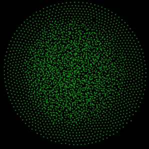
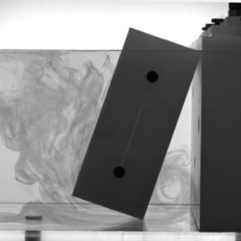
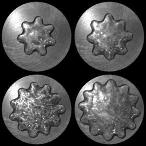

We study how order, motion and failure emerge in systems driven far from equilibrium, from charged microparticles floating in a plasma to the jammed icebergs that clog Greenland’s fjords. Many of our projects begin with something you can see on a tabletop or in nature: a drop skating on a hot pan, a sand castle that refuses to crumble, a giant soap bubble.
Our tools are precision experiments, high-speed imaging and particle tracking, numerical simulation, and increasingly machine learning that is built around physical constraints, so that it reveals new physics rather than simply fitting data. We work closely with glaciologists, seismologists, biologists, polymer scientists and theorists.

Levitated Matter
Particles suspended in plasmas and sound waves interact through forces that break Newton’s third law. We track them in 3D, learn their interactions directly from their motion with physics-tailored machine learning, and use levitation to study how static electricity shapes dust transport and even parasite–host encounters.
Explore →
Soft Earth Geophysics
Capsizing icebergs, glacial earthquakes, ice mélange and the slow creep of ice and sand. We recreate geophysical failure in the lab and build models of ice and granular flow that connect grain-scale physics to glaciers, from minutes to centuries.
Explore →
Gels and Fluids
How drops merge, break and charge; Leidenfrost vapor layers; swelling and sliding hydrogels; spreading films and giant soap bubbles; the sedimentation of shaped particles; and hidden mechanical gradients at polymer interfaces.
Explore →